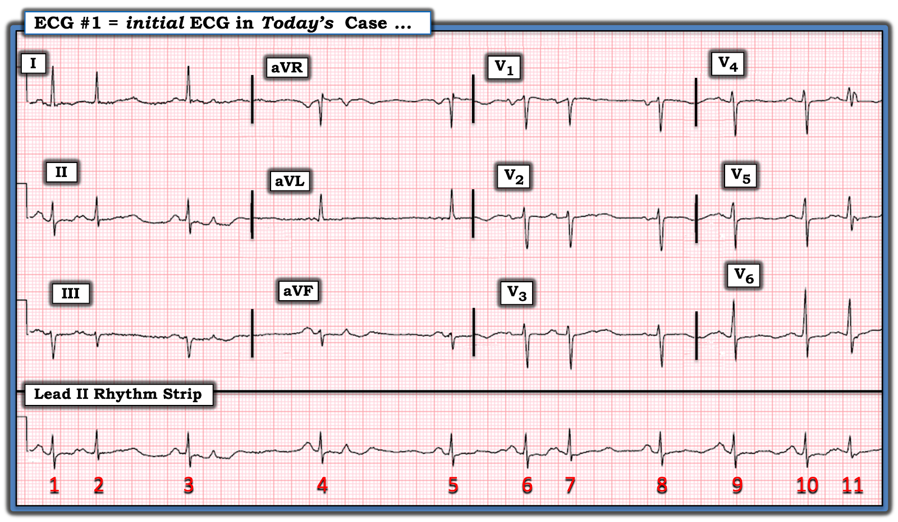
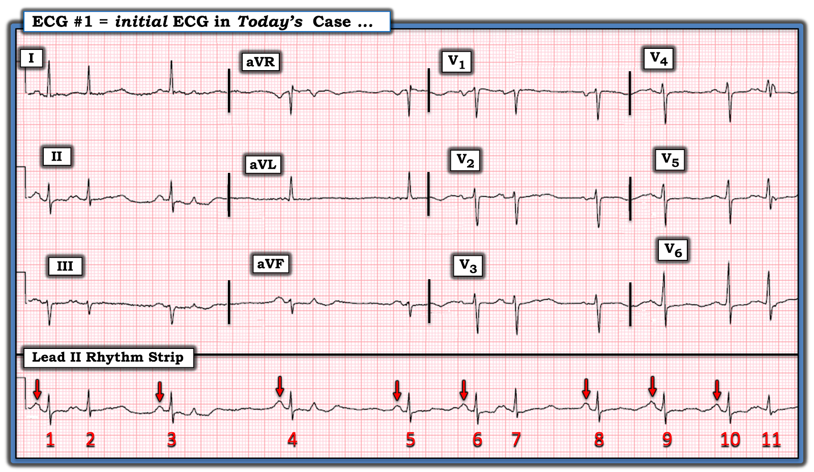
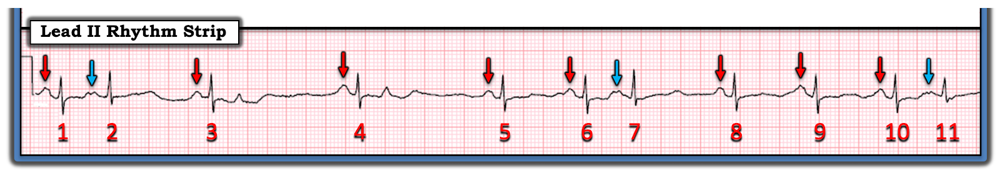
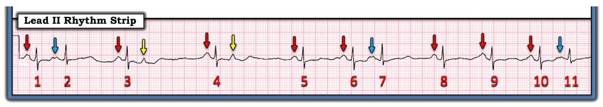
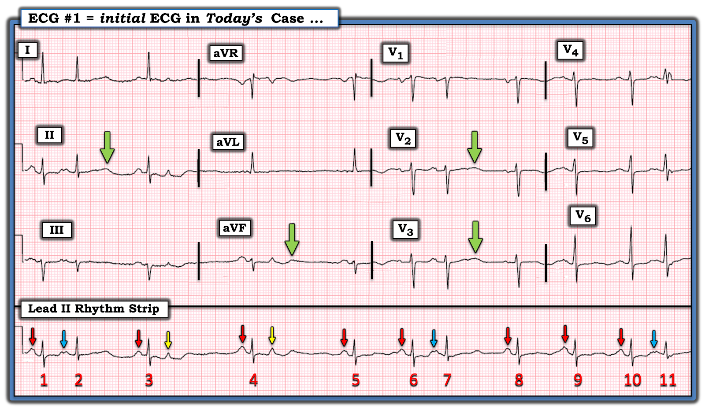
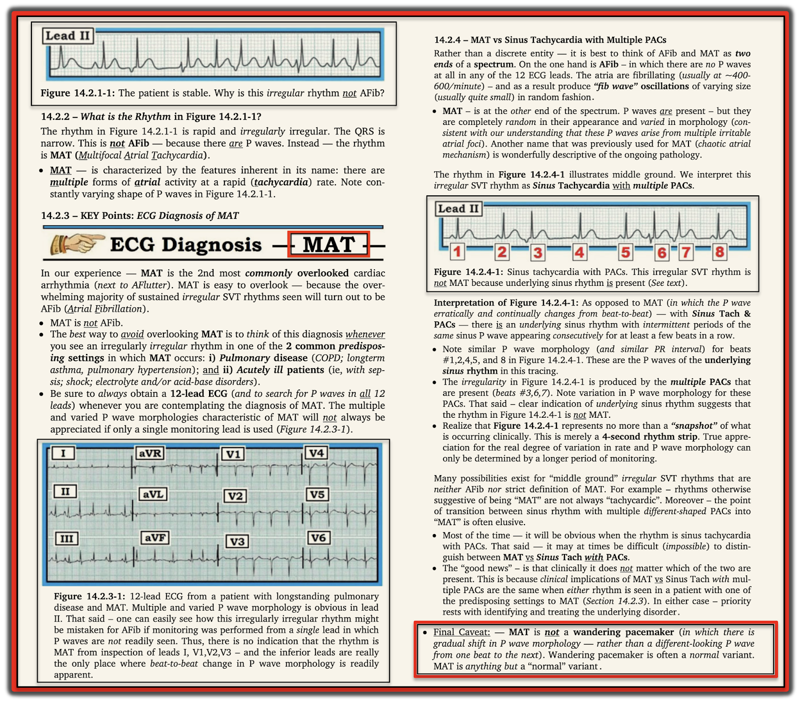

ECG Blog #385 — Bệnh nhân này ngừng tim ngay sau đó
Điện tâm đồ trong Hình 1 được ghi từ một phụ nữ 60 tuổi — đến ED (Emergency Department – khoa cấp cứu) vì “hồi hộp đánh trống ngực”. Các dấu hiệu sinh tồn của bà bình thường tại thời điểm ghi điện tâm đồ phân loại này. Bệnh nhân được lấy máu, và nhanh chóng được đưa vào phòng để khám — nhưng khi bước vào, bác sĩ cấp cứu phát hiện bà không đáp ứng trong tình trạng ngừng tim. Đã đạt được ROSC (Return Of Spontaneous Circulation – tái lập tuần hoàn tự nhiên) — nhưng bệnh nhân không hồi phục về thần kinh.
- BẠN sẽ đọc điện tâm đồ trong Hình 1 như thế nào?
- Bạn có thấy bất kỳ dấu hiệu nào trên điện tâm đồ này cho biết VÌ SAO bệnh nhân sắp ngừng tim không?


Góc nhìn triết lý:
Mọi nhân viên y tế cấp cứu thỉnh thoảng đều gặp một bệnh nhân ngừng tim bất ngờ — dù không có dấu hiệu rõ ràng nào từ vẻ ngoài cho thấy điều đó sắp xảy ra. Sự cố bất ngờ này luôn khiến chúng ta tự vấn nhìn lại xem liệu có dấu hiệu lâm sàng nào đã bị bỏ sót hay không.
- BẠN thấy gì trên điện tâm đồ #1?
SUY NGHĨ CỦA TÔI về điện tâm đồ #1:
Theo cách tiếp cận thường lệ của tôi — tôi thích bắt đầu phân tích bằng việc xem nhanh dải nhịp chuyển đạo dài trước khi tập trung vào 12 chuyển đạo. Theo cách tiếp cận Ps, Qs, 3R (xem ECG Blog #185):
- Nhịp trong Hình 1 rõ ràng không đều (Regular). Tần số (Rate) tim trở nên khá chậm ở một số đoạn (tức là, có vài khoảng R-R kéo dài quá 6 ô lớn).
- Phức bộ QRS hẹp ở cả 12 chuyển đạo — xác định đây là nhịp trên thất.
- Sóng P có hiện diện — các mũi tên ĐỎ trong Hình 2 chỉ ra các sóng P xoang đứng trước phần lớn các nhát (nhận ra nhờ hình dạng giống nhau của các sóng P này, dương ở chuyển đạo II với khoảng PR hằng định và bình thường).


CÂU HỎI:
Hãy nhìn lại Hình 2.
- Bạn thấy thêm bao nhiêu sóng P trên bản ghi này?
- GỢI Ý: Số sóng P nhiều hơn số phức bộ QRS ...
PHẦN #1 trong CÂU TRẢ LỜI của tôi:
Ngoài 8 sóng P xoang mũi tên ĐỎ trong Hình 2 — còn có 3 PAC được dẫn truyền (Premature Atrial Contractions – ngoại tâm thu nhĩ) — như tôi đánh dấu ở Hình 3 bằng các mũi tên XANH DƯƠNG đặt trước các nhát #2, 7 và 11.
- Lưu ý rằng 3 nhát này ( = các nhát #2,7,11) đều xuất hiện sớm hơn dự kiến (tức là, chúng "sớm").
- Mặc dù có một chút thay đổi về hình dạng sóng P của các sóng P dẫn truyền xoang trong Hình 3 (tức là, các sóng P dưới mũi tên ĐỎ) — hình dạng sóng P của mỗi PAC trong 3 PAC này rõ ràng khác so với sóng P của các nhát dẫn truyền xoang (tức là, các sóng P dưới mũi tên XANH DƯƠNG có khía). Sự khác biệt về hình dạng sóng P này cho thấy một vị trí xuất phát khác.
- Điểm tinh tế — BẠN có để ý rằng phức bộ QRS của mỗi PAC này hẹp và trông giống nhưng không hoàn toàn giống hệt hình dạng QRS của các nhát dẫn truyền xoang? (tức là, sóng s hẹp của các nhát sớm #2,7,11 không sâu bằng sóng S hẹp của các nhát dẫn truyền xoang). Lý do của sự khác biệt nhẹ về hình dạng QRS này — là các PAC này được dẫn truyền với một mức độ lệch hướng (sự khác biệt về hình dạng này có lẽ thấy rõ nhất khi nhìn nhát #11 ở chuyển đạo V4 ghi đồng thời trong Hình 2).


PHẦN #2: Vẫn còn thêm sóng P nữa!
BẠN có thấy 2 sóng lệch nhọn nằm trong sóng ST-T của các nhát #3 và 4 ở Hình 3 không?
- Chúng ta biết rằng 2 sóng lệch nhọn xuất hiện dưới các mũi tên VÀNG trong Hình 4 là thật — vì không sóng ST-T nào khác trong bản ghi hôm nay có hình dạng tương tự — và — cả 2 sóng lệch nhọn này đều được theo sau bởi một khoảng ngưng không thấy ở chỗ nào khác trên bản ghi này. Thời điểm này gợi ý mạnh rằng các sóng lệch nhọn dưới mũi tên VÀNG trong Hình 4 là các PAC bị blốc ! (chúng cài đặt lại nút SA — qua đó tạo ra khoảng ngưng ngắn theo sau các PAC bị blốc này).
- ĐIỂM THEN CHỐT (PEARL) #1: Một lý do khác khiến 2 sóng lệch nhọn trong bản ghi hôm nay nhiều khả năng là các PAC bị blốc — là điều tôi gọi là "Hiện tượng Ngưu tầm ngưu (Birds of a Feather)". Như đã bàn trong ECG Blog #348 — Vì chúng ta biết rằng nhịp hôm nay là nhịp xoang nền kèm các PAC dưới các mũi tên XANH DƯƠNG — nên nhiều khả năng các sóng lệch xuất hiện sớm khác, phù hợp với thời điểm của PAC bị blốc, thực sự là PAC.
- ĐIỂM THEN CHỐT (PEARL) #2: Như đã nêu trong ECG Blog #252 — chân lý tôi yêu thích nhất khi đọc rối loạn nhịp là, "Nguyên nhân thường gặp nhất của một khoảng ngưng là một PAC bị blốc". Áp dụng chân lý này giúp tránh chẩn đoán quá mức blốc AV — và khuyến khích chúng ta luôn soi kỹ mọi khoảng ngưng ngắn bất ngờ để tìm khả năng có hoạt động nhĩ không dẫn truyền bị che khuất.


Còn điện tâm đồ 12 chuyển đạo thì sao?
Hãy NHÌN LẠI điện tâm đồ 12 chuyển đạo của ca hôm nay — mà tôi đã đưa lại ở Hình 5. Điện tâm đồ này cho thấy:
- Trục hơi lệch trái (tức là, QRS chủ yếu âm ở chuyển đạo aVF) — nhưng chưa đủ âm để đạt tiêu chuẩn LAHB (tức là, QRS vẫn chủ yếu dương ở chuyển đạo II).
- Không lớn các buồng tim.
- Không có sóng Q.
- Tăng tiến sóng R hơi chậm (tức là, sóng R không trở nên dương hơn độ sâu của sóng S cho đến khoảng giữa V5 và V6).
- ST-T dẹt không đặc hiệu ở nhiều chuyển đạo.
- Sóng U (dưới các mũi tên XANH LÁ) kín đáo nhưng có thật.
- NHẬN ĐỊNH: Tôi không thấy thay đổi ST-T cấp tính nào trong Hình 5. Dù vậy — việc có nhịp xoang kèm rất nhiều PAC (một số không dẫn truyền) + ST-T dẹt không đặc hiệu ở nhiều chuyển đạo + sóng U — gợi ý mạnh khả năng có rối loạn điện giải (tức là, hạ K+ và/hoặc hạ Mg++).


QUAY LẠI với CA BỆNH hôm nay:
Tóm tắt lại bệnh cảnh lâm sàng của ca hôm nay — phụ nữ 60 tuổi này đến ED vì "hồi hộp đánh trống ngực". Dấu hiệu sinh tồn ban đầu "bình thường" — nhưng ngay sau đó bệnh nhân được phát hiện ngừng tim. Mặc dù không ai có thể dự đoán một cơn ngừng tim sắp xảy ra từ bản ghi ban đầu trong Hình 5 — đánh giá mà tôi thừa nhận là nhìn lại sau sự việc đối với điện tâm đồ hôm nay lẽ ra phải gợi ý:
- Một rối loạn điện giải có khả năng (tức là, hạ K+ và/hoặc hạ Mg++).
- Nhịp xoang nền với rất nhiều PAC có ít nhất 2 hình dạng khác nhau. Mặc dù rối loạn nhịp trong Hình 5 không đủ mức không đều hay mức thay đổi sóng P để đạt tiêu chuẩn MAT — việc có nhiều PAC với hơn 1 hình dạng nên gợi ý những hàm ý lâm sàng tương tự như nhịp MAT được mô tả trong ECG Blog #366 — tức là người điều trị cần lường trước hoặc bệnh phổi nặng và/hoặc rối loạn đa hệ cơ quan ở một bệnh nhân "nặng".
- DIỄN TIẾN CỦA CA BỆNH: Kết quả xét nghiệm lấy máu trước khi ngừng tim — có sau cơn ngừng tim. Kết quả cho thấy hạ kali máu nặng kèm toan máu nặng, giảm oxy máu, và dấu hiệu sớm của ứ CO2. Bài học lâm sàng khó khăn — là đôi khi bệnh nhân có thể nặng hơn vẻ bề ngoài.
==================================
Lời cảm ơn: Xin cảm ơn Chun-Hung Chen - 陳俊宏 (ở thành phố Đài Trung (Taichung City), Đài Loan) đã chia sẻ ca bệnh và bản ghi này.
==================================
==========================
PHẦN BỔ SUNG (7/9/2023) — Tài liệu bổ sung liên quan đến ca hôm nay:


==================================
Các bài ECG Blog Liên quan đến ca hôm nay:
- ECG Blog #205 — Ôn lại Cách tiếp cận Hệ thống của tôi khi đọc điện tâm đồ 12 chuyển đạo.
- ECG Blog #185 — Ôn lại cách tiếp cận Ps, Qs, 3R để đọc nhịp một cách hệ thống.
- ECG Blog #199 và ECG Blog #366 — để ôn lại về MAT.
- ECG Blog #65 — ví dụ về MAT ở bệnh nhân mắc bệnh phổi mạn tính (kèm thêm về chẩn đoán phân biệt của MAT).
- ECG Blog #200 — ví dụ về ổ tạo nhịp nhĩ lang thang (Wandering Atrial Pacemaker).
- ECG Blog #289 — Ôn lại cách nhận biết sóng U (và hạ K+/Mg++).
- ECG Blog #348 — Ôn lại khái niệm "Ngưu tầm ngưu" (Birds of a Feather) (trong việc nhận ra các PAC dẫn truyền lệch hướng).
- ECG Blog #252 — "Nguyên nhân thường gặp nhất của một khoảng ngưng" là một PAC bị blốc.
- ECG Blog #140 — Ví dụ về dẫn truyền lệch hướng kiểu blốc hai phân nhánh luân phiên.
- ECG Blog #14 — Ví dụ về PAC bị blốc.
- ECG Blog #15 — Ví dụ về một nhịp WCT với dẫn truyền lệch hướng.
- ECG Blog #33 — Ví dụ về PAC với các mức độ dẫn truyền lệch hướng khác nhau.
- ECG Blog #263 — Phân biệt các nhịp WCT (tức là, quyết định giữa VT hay dẫn truyền lệch hướng?).
- ECG Blog #211 — VÌ SAO xảy ra Dẫn truyền lệch hướng? (Và vì sao dạng dẫn truyền lệch hướng thường gặp nhất có hình dạng RBBB).
- ECG Blog #70 — Ôn lại Hiện tượng Ashman (liên quan đến dẫn truyền lệch hướng).
- ECG Blog #71 — Về hiện tượng Ashman trong rung nhĩ (AFib).
Tôi dẫn thêm 2 ca minh họa lấy từ Dr. Smith’s ECG Blog. Với mỗi bài này — xin cuộn xuống cuối trang để xem My Comment (bình luận của tôi). Các ca này giúp hiểu thêm về cách đánh giá MAT:
- Bài ngày 5 tháng 1 năm 2020 trên Dr. Smith’s ECG Blog — ví dụ về MAT.
- Bài ngày 30 tháng 9 năm 2019 trên Dr. Smith’s ECG Blog — ví dụ về “MAT”, nhưng không có nhịp nhanh ...